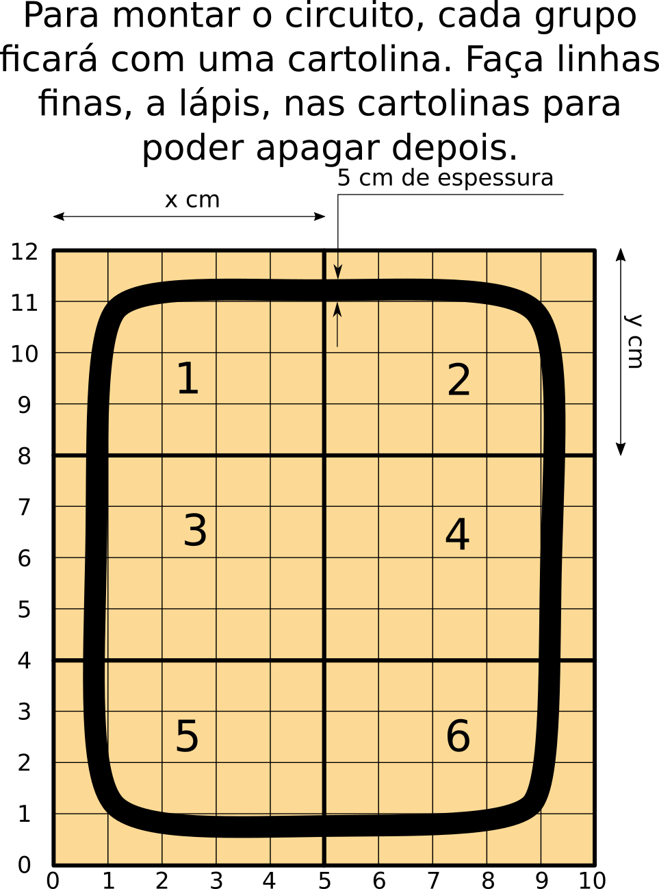

Vamos concluir a construção arena.
A folha com o desenho da pista e o modo como desenharão a pista será apresentado pelo professor durante a aula. O professor também irá fornecer réguas para uso durante a aula.
Baixe a imagem em formato pdf caso queira imprimir esta folha.
Baixe aqui a atividade 4 do segundo trimestre.